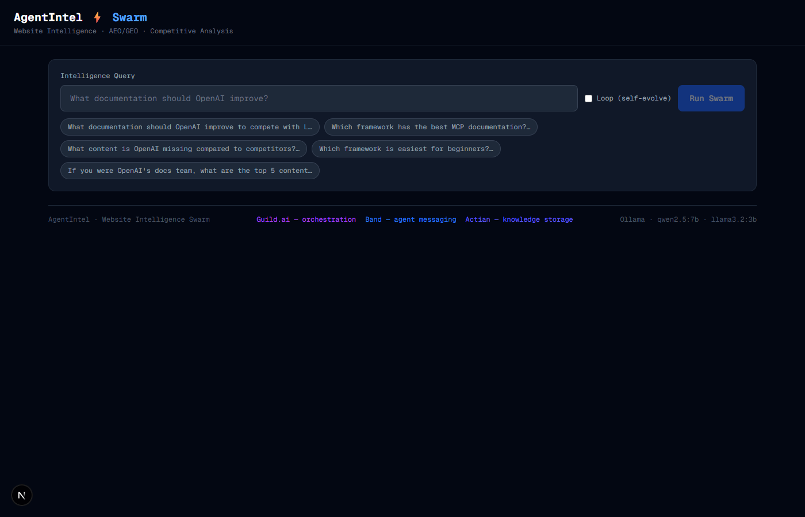
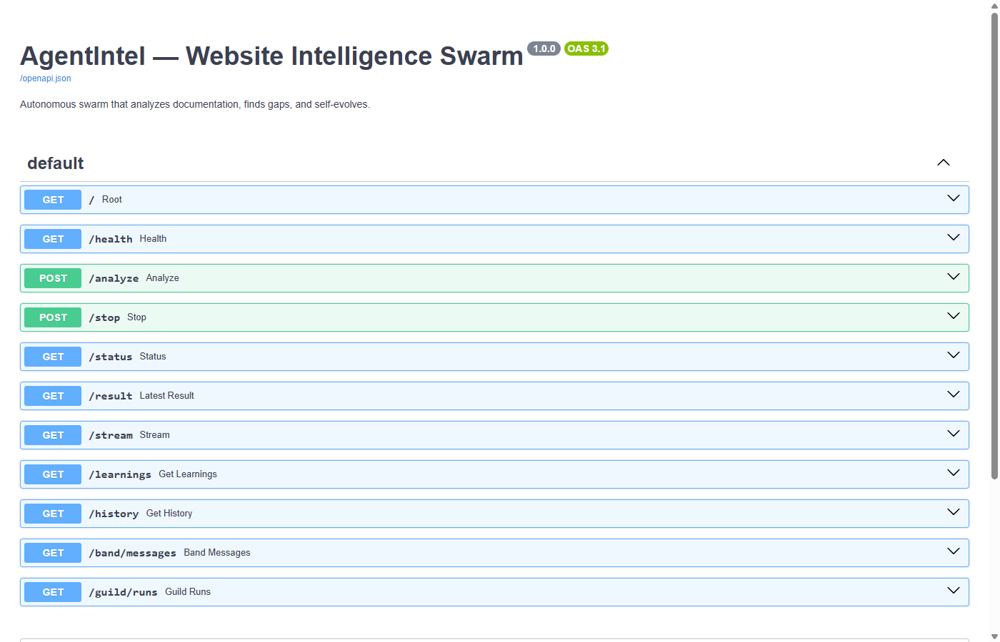

The AI visibility gap nobody's measuring
When someone asks ChatGPT, Claude, or Gemini to recommend an agent framework, a SaaS tool, or a vendor — the model answers from its training data and retrieved context. Companies that show up are cited. Companies that don't, aren't. And there's currently no clear way to know which category you're in, or why.
This is sometimes called AEO (AI Engine Optimization) or GEO (Generative Engine Optimization). The names are new but the underlying problem is straightforward: AI models favour content that is structured, factually dense, and directly answers likely questions. Most websites aren't built for that. Most aren't even measured against it.
What AgentIntel actually is
AgentIntel is a hackathon project. It's a multi-agent system with a FastAPI backend, a Next.js frontend, and seven specialised agents that run in parallel to analyse a website. The output is a structured JSON report with GEO scores, knowledge gaps, and ranked recommendations.
It's not a product and it's not a SaaS. The codebase is on GitHub, the sponsors are integrated and live, and the results are real — but there's plenty that doesn't work cleanly yet and the limitations section is honest about that.
Scrape
Fetches target and competitor URLs via httpx with a disk cache. Subsequent runs skip the network entirely.
Analyse
7 agents run in parallel. Each has a narrow job: knowledge extraction, GEO scoring, gap detection, or recommendation generation.
Report
Structured JSON result: GEO scores per page, knowledge graph, competitor gaps, and up to 5 ranked recommendations with citations.

Architecture overview
The system has four layers: the Next.js frontend talks to a FastAPI backend via Server-Sent Events for real-time streaming. The backend runs the swarm in a thread pool and pushes agent step events to the browser as they happen. Results are stored locally and optionally pushed to the three sponsor integrations.
The SSE pattern was a deliberate choice. The swarm takes 30–90 seconds and a blocking HTTP request would either time out or leave the user with a blank screen. With SSE, the frontend gets a step event for every agent completion and renders progress in real time. When the done event fires, the frontend fetches the full result from GET /result.
How the swarm works
The swarm runs in three phases. Phase 1 is sequential: the planner decides the task breakdown, then website and competitor agents scrape in parallel threads. Phases 2 and 3 hand off to analysis agents that each receive the scraped content and produce structured JSON output via the LLM.
_llm_openai(). The max_tokens was initially 512 — which silently truncated the JSON output of the knowledge, gap, and recommendation agents, returning empty objects. Raised to 2048 and the problem disappeared. The parser also uses json.JSONDecoder().raw_decode() to handle trailing text after valid JSON, which models produce fairly often.
Sponsor integrations
All three sponsor integrations are live. Each took a meaningful amount of debugging to get working — the docs were incomplete in all three cases, and the API behaviour wasn't what I expected.
thought event to a Band chat room. The swarm registers itself as an external agent, creates a chat room on startup, and posts to it throughout the run.
gpt-4.1-nano via the OpenAI API. A single env variable switches to local Ollama — same prompts, same output structure, roughly 3–4x slower.
X-API-Key not Bearer, and request bodies are nested under a key ({"agent": {...}}, not flat). Guild's base URL is https://app.guild.ai/api — the documented https://api.guild.ai/v1 doesn't resolve. Both were found by reading CLI source code, not documentation.
What a real run produces
This is from iteration 14, run against OpenAI's agent docs compared with LangChain and CrewAI. The numbers aren't particularly surprising — OpenAI scores well on its own docs — but the gap analysis is where the value is.
GEO scores by page
Content gaps found
| Gap type | Missing from OpenAI | Present in |
|---|---|---|
| Multi-step workflow tutorial | No step-by-step workflow composition guide | LangChain, CrewAI |
| Vector store + RAG integration | Retrieval integration not covered in agent docs | LangChain, CrewAI |
| Agent architecture visualisation | No diagrams showing internal structure | LangChain |
| Troubleshooting / common errors | No FAQ or error reference section | LangChain, CrewAI |
Top recommendations generated
-
1
Multi-step workflow tutorial — High impact, Medium effort
A step-by-step guide with runnable code showing how to compose multi-step agent workflows. LangChain and CrewAI both have this; the absence is a measurable gap in AI citation coverage.
-
2
Vector store + RAG integration guide — High impact, Medium effort
How to connect retrieval systems to agents. Currently a blind spot in the docs despite being one of the most common agent patterns in practice.
-
3
Architecture diagrams — Medium impact, Low effort
Visual diagrams of agent flow and internal structure. LangChain's diagrams appear frequently in AI model answers about agent architecture. OpenAI has none in the current docs.
-
4
Troubleshooting FAQ — High impact, Low effort
Common errors, debugging tips, and definitions of key terms. Low effort to write, directly addresses AI citability (models favour structured Q&A content).
Tech stack
FastAPI + SSE
Backend API with Server-Sent Events for real-time agent progress streaming. Uvicorn, Python 3.11+.
Next.js 15
App Router, TypeScript, Tailwind CSS. Connects to the SSE stream via the browser's native EventSource API.
ThreadPoolExecutor
Website and competitor agents run in parallel threads. The SSE generator is a Python generator on the main thread — thread-safe step callbacks feed it.
Disk cache
Scraped HTML is hashed and cached to data/scrape_cache/. Re-running the swarm skips all network calls if the cache is warm.
Ollama fallback
USE_OPENAI=False routes all LLM calls through local Ollama. Same prompt structure, same output format — useful for offline development.
Evolution loop
Optional: POST /loop/start re-runs the swarm every N seconds autonomously, accumulating results across iterations.

/docs. The /analyze and /stop routes are the primary control surface; /stream, /result, /band/messages, and /guild/runs support debugging and the frontend.
What doesn't work well yet
Being honest about the gaps is more useful than glossing over them.
Scraper is basic — JavaScript-heavy sites return empty content
httpx fetches raw HTML only. SPAs and sites that render content in the browser return near-empty pages. A Playwright or Puppeteer integration would fix this but adds complexity.
Recommendation wording changes across runs
The same site analysed twice can produce different recommendation ordering and wording. The underlying gap detection is fairly stable but the generated text isn't deterministic.
Ghost TCP sockets on port 8000 require a reboot to clear
A uvicorn reload race condition leaves a zombie socket that can't be killed by any normal Windows process tool. The only fix found was rebooting. This only affects development restarts, not production.
Vector search is not yet used by all agents
The ingest pipeline stores content in Actian and verifies the connection, but the knowledge and GEO agents currently read from the raw cached content rather than querying the vector store. Wiring this up is the next step.
Learning log
These are the specific things that went wrong, and how they were fixed. Organised by type: gotchas (bugs that weren't obvious), discoveries (things that work differently than assumed), and wins (patterns that worked well and are worth reusing).
X-API-Key, not Bearer — and nested JSON bodies
Authorization: Bearer band_u_* returns 401 every time. The correct header is X-API-Key: band_u_*. Request bodies are nested: {"agent": {"name": "..."}}, not flat. Found by reading the OpenAPI spec at docs.band.ai/openapi.json.
api.guild.ai doesn't resolve — use app.guild.ai/api
Every call to https://api.guild.ai/v1 fails with a DNS error — the host doesn't exist. Correct base URL is https://app.guild.ai/api with no version prefix. Found by searching the @guildai/cli JavaScript source in the npx cache.
max_tokens=512 silently truncates JSON output
Knowledge, gap, and recommendation agents returned empty {} with no error. The LLM was cutting off mid-JSON at 512 tokens. Raised to 2048 and added json.JSONDecoder().raw_decode() to handle trailing text after valid JSON.
Band agent key must be persisted — 409 on every restart
Band issues the band_a_* key once on registration. Re-registering the same name returns 409 with no key in the response. Fixed by writing BAND_AGENT_KEY to .env immediately after first registration and reusing it on restarts.
$pid is a reserved automatic variable in PowerShell
$pid always holds the current PowerShell session's own process ID. Assigning $pid = $conn.OwningProcess silently fails — the variable snaps back. Stop-Process -Id $pid was trying to kill the shell itself. Renamed to $processId.
localhost resolves to IPv6 on Windows — use 127.0.0.1
Windows 10/11 resolves localhost to ::1 (IPv6) first. If uvicorn or Actian listens on 0.0.0.0 (IPv4 only), the connection fails silently even though the service is running. Hardcoded 127.0.0.1 everywhere in startup scripts.
?? null-coalescing operator doesn't exist in PowerShell 5.1
Windows ships with PowerShell 5.1 by default and never auto-upgrades. ?? was introduced in 7.0. The startup script silently failed on first run. Replaced with if ($x) { $x } else { $default }.
20s backend startup timeout too short when sponsors connect at init
Band, Guild, and Actian each make outbound HTTP calls in __init__. On a cold start this totals 30–45 seconds. The startup script was reporting "backend not ready" and launching the frontend before the backend finished initialising. Extended wait to 60 seconds.
Don't access private attributes — use return values
The orchestrator called guild.start_run() then later read guild._current_run_id directly. After the guild.py rewrite, that attribute could hold a stale ID from a previous run. Fixed by capturing the return value: guild_run_id = guild.start_run(...).
.gitignore inline comments silently break pattern matching
Writing .env # API keys makes the whole string including the comment part of the pattern. .env was never ignored and appeared in every git add. Git only supports comments on their own dedicated line.
A nested .git directory causes submodule confusion
The Next.js frontend was scaffolded with its own .git/. The root repo treated frontend/ as an unregistered submodule and refused to track files inside it. Fixed by deleting frontend/.git, then git rm --cached -f frontend, then re-staging.
SSE streaming is the right pattern for long-running agent jobs
A blocking HTTP request times out or leaves the user with nothing for 90 seconds. SSE lets the backend push each agent completion event as it happens. Pattern: run in thread → stream events → client fetches full result on done. Works cleanly in the browser with no WebSocket complexity.
When docs are incomplete, read the CLI source code
Both Band and Guild had incomplete or wrong documentation. The definitive source was the CLI JavaScript bundles in the npx cache — they contain the exact endpoint paths, request shapes, and auth headers used in production. grep -r "X-API-Key\|/sessions" ~/.npm/_npx/ saved hours.
Get started
Prerequisites: Python 3.11+, Node 18+, and an OpenAI API key. The sponsor integrations are optional — the swarm runs without them.
-
1
Clone and set up the backend
git clone https://github.com/researchsite/AgentIntel.git && cd AgentIntel/backend
python -m venv .venv && .venv/Scripts/activate
pip install -r requirements.txt -
2
Configure .env
Copy
.env.exampleto.env. The only required key isOPENAI_API_KEY. Everything else — Ollama fallback, Band, Guild, Actian — is optional and the system runs without any of them. -
3
Ingest content
python ingest.py— scrapes the configured target and competitor URLs and stores content. Takes ~30 seconds on a cold cache. -
4
Start all services
Windows:
.\start_all.ps1— starts Actian if installed, waits for the backend to be ready (up to 60s), then starts the Next.js frontend. Or start each manually:uvicorn main:app --port 8000andcd frontend && npm run dev. -
5
Check health and run
curl http://127.0.0.1:8000/healthshould return{"status":"ok"}. Open http://localhost:3000, enter a target URL, and watch the swarm run.
127.0.0.1 explicitly in curl and the startup script. localhost can resolve to IPv6 and fail to connect to services listening on IPv4.